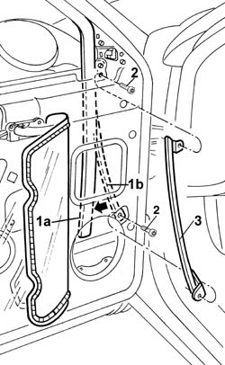

7005D20 front door window front guide - r r
- Path
- Procedures > 70 FITTINGS > 7005 PASSENGER COMPARTMENT FRONT SIDE DOORS > 7005D front side door window glasses > 7005D20 front door window front guide - r r
- Kind
- repair procedure (removal / refitting; the operation number is the code)
- Applies to
- all engines; all production periods
- Interactive page
- https://sloeber94.github.io/elrnDB-a156/en/#/3238592
Applies to: all engines; all production periods
 Removing
Removing
 Refitting
Refitting7005A04 front side door water guard protection - r r or replace with door panel removed
1. With the window fullfy raised, remove the front run channel (1a) from the front window guide (1b).
2. Undo the bolts.
3. Remove the front window guide.

Applies to: all engines; all production periods
Refitting
RemovingCheck that the front guide is not damaged.
Position the front guide.
Tighten the screws.
Fit the front run channel on the front guide.
Check that the window works properly.
7005A04 front side door water guard protection - r r or replace with door panel removed